(FF2) MicroNeuroGrafie MSNA (F62)
Wijzigingen jan 2005
Wijzigingen 1-juli-2001
Wijzigingen 9-juni-2001
Wijzigingen 29-mei-2001
Wijzigingen 6-april-2001
Deze rekenfunktie detecteert in een (gelijkgericht) neurogram de sympathetic outflow.
Het opsporen van de sympathische activiteit gebeurt door het neurogram te correleren met een driehoek signaal. De maxima in de correlatie functie worden vervolgens getoetst op een minimale amplitude en op een constante tijdsrelatie met het QRS-complex uit het ECG. De drempel en de maximale tijd-afwijking kunnen worden ingesteld.
De geldige burst worden als een tijd-signaal weergegeven, waarin zowel de amplitude als het tijdstip goed zijn te herkennen. De afgekeurde bursts worden in een apart tijdssignaal weergegeven, waarin de reden van afkeur is te herkennen.
Over de geldige sympathetic outflow bursts wordt een lopend gemiddelde over 1 minuut en over 100 hartslagen bepaald.
Alle uitgangssignalen worden zodanig in de tijd verschoven dat ze in een amplitude-tijd diagram direct onderling vergeleken kunnen worden, bovendien zijn 2 extra ingangen aanwezig om signalen naar keuze eveneens in de tijd te verschuiven.
Verder zijn een aantal tussenresultaten van de berekeningen als amplitude-tijdssignaal beschikbaar.
1 = het gelijkgericht Neurogram
2 = R-top (afkomstig uit een QRS-detector)
3 = extra signaal1, dat vertraagd wordt uitgegeven
4 = extra signaal2, dat vertraagd wordt uitgegeven
5 = marker, welke wordt gebruikt om (onterecht) gedetecteerde MSNA bursts te verwijderen
6 = extra signaal3, dat vertraagd wordt uitgegeven
1 = tijd-gecorrigeerde neurogram
2 = tijd-gecorrigeerde R-top
3 = tijd-gecorrigeerde extra signaal1
4 = tijd-gecorrigeerde extra signaal2
5 = tijd-gecorrigeerde Sympathetic Amplitude
6 = tijd-gecorrigeerde discarded bursts
7 = tijd-gecorrigeerde Mean Sympathetic Outflow over 1 minute
8 = tijd-gecorrigeerde Mean Sympathetic Outflow over 100 hartbeats
9 = tijd-gecorrigeerde reconstructie
10 = RR-interval in msec
11 = MSNA synchroon met R-top t.b.v. export (zelfde signaal als 5, tijdsverschoven)
12 = MSNA tijdsverschil met R-top (t.b.v. export), negatief is voor R-top, positief is na R-top
13 = tijd-gecorrigeerde extra signaal3
In de design mode, worden de signalen 10 t/m 13 gebruikt voor tussen resultaten
10 = tijd-gecorrigeerde A
11 = tijd-gecorrigeerde B
12 = tijd-gecorrigeerde error
13 = tijd-gecorrigeerde wismarkering (door marker)
Hieronder een voorbeeld van een gelijkgericht neurogram (zwart) , met de detectie signalen.
Het blauwe signaal is het R-top signaal uit de QRS-detector.
Het gele signaal geeft de gedetecteerde geldige sympathische bursts weer, de hoogte van de pieken is evenredig met de gedetecteerde amplitude.
LET OP: een gedetecteerde burst geeft slechts 1 sample de amplitude weer (geeft een simpele export mogelijkheid), dit betekent echter dat het display (dat meestal in de tijd gecomprimeerd zal zijn) in de "stripchart-mode" zal moeten staan om alle pieken in de juiste hoogte te kunnen zien.
Het rode signaal geeft de afgekeurde bursts weer. Naar beneden gerichtte spikes zijn in ieder geval afgekeurd omdat ze buiten het opgegeven tijds-interval vallen (en mogelijk ook niet voldoen aan het amplitude criterium). De naar boven gerichtte spikes vallen wel binnen het tijdsinterval maar hebben een te lage amplitude.
VRAAG: is amplitude wel een goede maat of moet dit energie (= amplitude^2) zijn ?
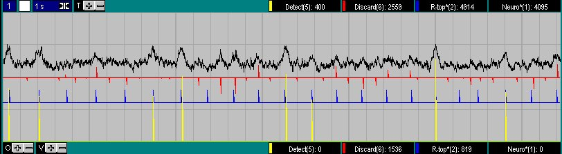
|
In de eerste pre-scan van het signaal worden de grootste bursts gezocht. Over deze grootste bursts worden de gemiddelde ampltude en de gemiddelde delay tijd bepaald. Deze 2 waarnemingen staan vermeld in het meetvenster rechts onder ("Max Amplitude" en "Mean Delay"). Spike detectie: met name spikes als gevolg van statische electriciteit kunnen hiermee worden verwijderd, werkt zowel in pre-scan als in de normale scan. NCC, de breedte van de halve driehoek, waarmee wordt gecorreleerd om bursts te vinden, wekrt zowel in pres-scan als normale scan. Min Ampl (%): het amplitude detectie criterium, een burst moet groter zijn dan Min Ampl % van het gemiddelde maximum gevonden in de pre-scan. Min Ampl absoluut: idem maar dan in absolute waarde (1 van beide mag worden ingevuld, de andere wordt vervolgens automatisch aangepast) Max Delta T: het tijds detectie criterium, de delay van R-top naar burst mag maximaal Max Delta msec afwijken t.o.v. het gemiddelde gevonden in de pre-scan. De edit velden worden pas geactiveerd na het indrukken van de ENTER toets. Indien de instelling van spike-detectie of NCC wordt gewijzigd, wordt automatisch een nieuwe pre-scan uitgevoerd. |
|
|
Tijdens een normale scan, staan de gemiddelde burst activiteit van het laatst gedisplayede moment in het venster rechts. Het vraagteken toont dit help-bestand. |
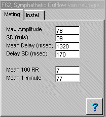 |
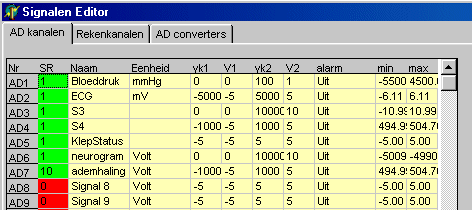
(let op de biezondere ijking van MSNA-time)
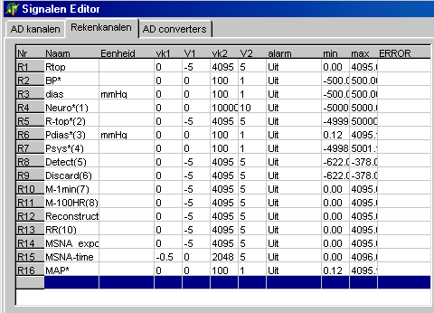
|
Laagdoorlaat filter moet groter dan 8 Hz staan, anders wordt de systole (zichtbaar) te laag geschat. Vervolgens moet de differentielengte groot genoeg worden ingesteld om geen al te veel last van storingen en met name Finapres kalibraties te hebben. |
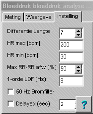 |
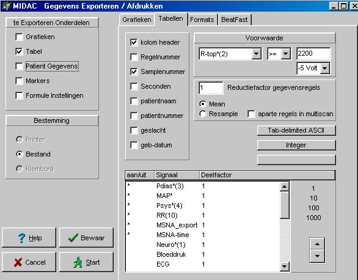
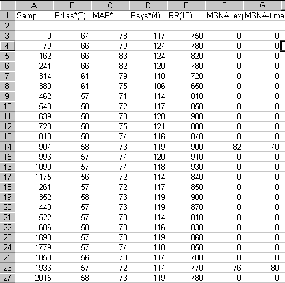
Hieronder de lange termijn gemiddelde.
Rood = Sympathetic Outflow over the last 100 hartbeats.
Blue = Sympathetic Outflow over the last minute.
Green = tijd-gecorrigeerde diastolische druk
Geel = ademhaling
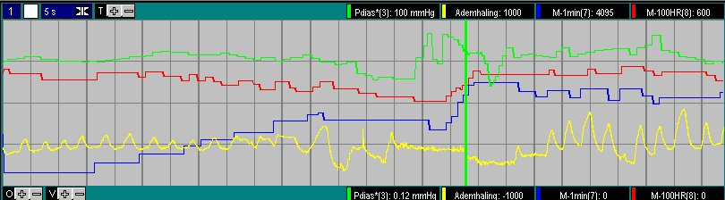
In de pre-scan worden 2 parameters bepaald, welke in de normale scan worden gebruikt als detectie criterium.
Pre-scan:
Normale Scan
Omdat curve fitting wordt toegepast is filtering in het geheel niet nodig.
Rood het oorspronkelijke neurogram.
Blauw de reconstructie volgens x(i) =SOM ( A(i) * m(i-ii) + B(i) + error(i) )
Geel = A(i) , de maxima geven de amplitude van de bursts
Groen = error(i)
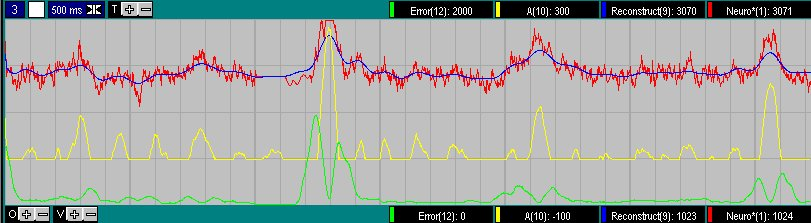
Sympathetic Outflow,
Geen vals positieve bursts meenemen, dus liever een onderschatting
Handmatige correctie gewenst
Door de materie deskundige worden de volgende eigenschappen omschreven
Het signaal op een technische manier bekijkend:
Ad 2: omdat gekeken wordt naar een aantal neuronen in een bepaald gebied, zal het signaal bestaan uit de som van alle signalen uit de buurt. Bij verhoging van sympathetische activiteit zal zowel de vuurfrequentie alsook het aantal actieve neuronen toenemen, hetgeen resulteert in een Gauss-shape. Deze vorm impliceert ook dat bij een toename van de sympathische activiteit zowel de hoogte als de breedte van de waargenomen puls toe zal nemen.
Ad 4: de vraag is of het verstandig is om de baseline te corrigeren, immers zo kan niet onderscheiden worden of een DC-shift het gevolg is van een verplaatsing van de electrode danwel van de versterker instelling.
Gebaseerd op de geconstateerde signaal eigenschappen (op basis van 1 proefpersoon), komen we voorlopig tot de onderstaande analyse methode. Het is vanzelfsprekend dat er eerst spike detectie/removal wordt uitgevoerd, immers filtering zal spikes maskeren. Bepaling van de standaard deviatie kan pas plaatsvinden nadat de DC-variaties zijn verwijderd, anders wordt de SD teveel gebiased. Een mogelijk alternatief is, geen DC-filtering, maar een segmented analyse te doen. Wordt nog bekeken. Omdat de vorm zowel op theoretische gronden als op visuele gronden als een Gauss mag worden gekarakteriseerd, lijkt template correlatie voor de hand te liggen. De laatste stap (handmatige verwerping) is toegevoegd, omdat de voorkeur geeft aan een onderschatting van de sympathische activiteit.
Door de materie deskundige worden pulsen met een (te) steile opgaande flank als stoor-spikes geïdentificeerd. Het ligt dus voor de hand om de afgeleide van het signaal te gebruiken als spike detectie. Er zijn 2 methodes van afgeleide bepaling met elkaar vergeleken, de average sloop methode over 6 punten (zou theoretisch de beste resultaten leveren) en een simpele 2-punts methode (is rekentechnisch het meest eenvoudig). Beide methoden doen het even goed (zie onderstaande plaatjes) en dus wordt vanuit rekentechnische overwegingen gekozen voor de 2-punts methode. Voor de average sloop methode zou een drempel van 100...120 moeten worden genomen en voor de 2-punts afgeleide een drempel van 300.
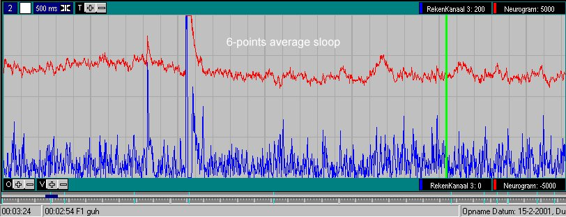
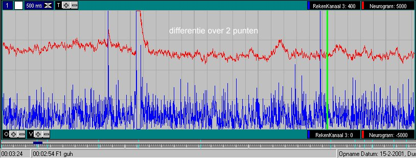
Zodra een spike wordt gedetecteerd (dit zal altijd te laat zijn), wordt het neurogram gedurende 500 msec constant gehouden. Deze constante waarde wordt betrokken uit en gestart op 100 msec voor het detectiepunt. Na deze constante waarde over 500 msec, wordt het signaal gedurende de volgende 500 msec gefilterd met een laagdoorlaat filter teneinde weer een soepele aansluiting met het gemeten neurogram te krijgen. De gebruikte afsnijfrequentie is .... de filterfunktie is Y(i+1) = alfa * Y(i) + (1-alfa) * X(i) , met alfa =0.9 ...
In onderstaande figuur is het effect van spike removal duidelijk te zien, de rode curve is het ruwe neurogram, de blauwe curve is het "gefilterde neurogram, op de momenten A t/m D is de spike detectie/removal actief.
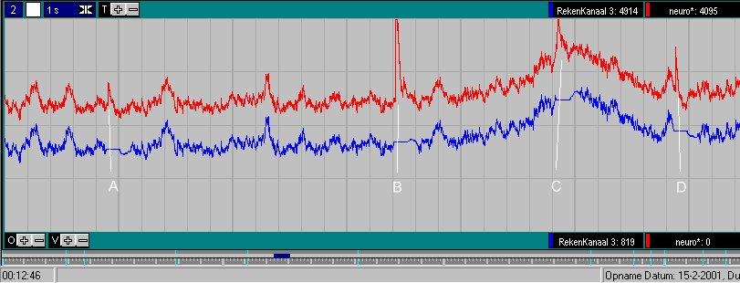
zo maar een leuk plaatje, alle signalen zodanig in tijd verschoven dat ze direct correleren.
Geel is bloeddruk, Zwart is R-top detectoe, Blauw is gefilterde neurogram.
De rode curve is het ruwe neurogram, deze ligt geheel onder de blauwe curve, behalve op de momenten dat een spike wordt gedetecteerd.
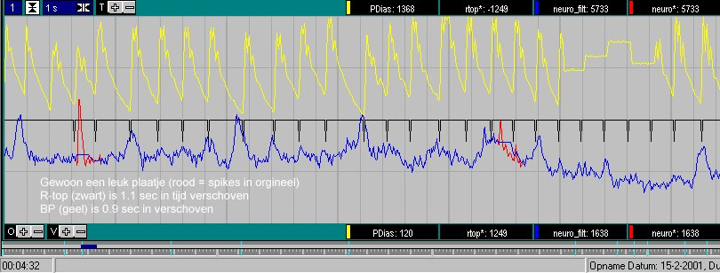
De geregistreerde neurogram is gelijkgericht (en mogelijk gefilterd). De sympathetic outflow bursts worden daarom gezien als positieve pieken, welke optreden een vaste tijd na de R-top in het ECG. Door de gelijkrichting is het frequentie-spectrum vervormd (niet-lineair) en derhalve verdienen bewerkingen in het frequentie-domein niet de voorkeur. Detectie kan op het eerste gezicht dus het best geschieden via een of andere vorm van template matching.
De vorm van een gelijkgerichtte burst zou op grond van de theorie een Gauss-vorm moeten hebben. Als de registratie bekeken wordt, (hetgeen lastig is door de sterke ruis, maar filtering tast mogelijk de vorm aan), kan soms de Gauss vorm herkend worden, maar een "driehoek" voldoet zeker zo goed. Rekentechnisch gezien, is een driehoek uiterst interessant, de rekentijd is minimaal.
Bij deze eerste patient, bestaat de driehoek uit een positiev flank van 400 msec en een identieke negatieve flank.
Cross-correlation levert op zich een goed beeld, echter de cross-correlation is sterk vervuild met de DC-shift.
Een (in wezen) identieke methode wordt verkregen via directe template matching, waarbij de fout wordt geminimaliseerd middels de kleinste kwadraten methode. Deze methode heeft geen last van DC-shifts, omdat deze als aparte parameter uit de formule komt rollen. Bovendien is continue de gesommeerde fout beschikbaar welke mogelijk een extra detectie criterium oplevert.
|
Het signaal x is een lineaire translatie van het model m, met een fout e (1)
Kwadratische fout over het gehele template (2) wordt geminimaliseerd, door
afgeleide naar A nul te stellen (3)
en de afgeleide naar B nul stellen (4)
(4) levert uitdrukking voor B (5)
(5) substitueren in (3) levert de correlatie (6) |
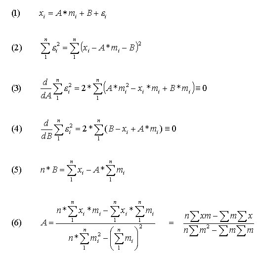 |
De variabele A levert rechtstreeks de "energie" van de gevonden puls.
Als template wordt gebruik gemaakt van de reeks 1, 2, 3,...n/2, n/2, ...3, 2, 1. Hierbij komt n/2 samples overeen met 400 msec. De reden om deze reeks te nemen (en niet een genormaliseerde reeks met energie=1 en mean=0) heeft te maken met de minimalisatie van de rekentijd, immers nu behoeven slechts enkele optellingen/aftrekkingen per meetpunt te worden uitgevoerd (zie programma-code).
Om toch te normeren, wordt niet A, maar A/n als uitgangssignaal genomen. Op deze manier wordt de uitkomst ook anafhankelijk van de breedte van het template.
|
(7) geeft de DC component
De resterende kwadratische fout wordt beschreven door (8)/(8b)
(8b) is rekentechnisch iets eleganter. |
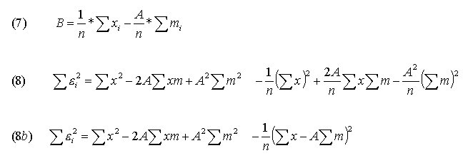 |
{kind=link}